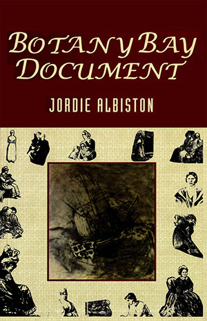

|
Botany Bay Document : Jordie Albiston |
||||||||
 |

Book Description They lie in rows with two to a bed Their sleeping faces assorted And dreams of mothers circle the heads of Lady King's one hundred daughters Jordie Albiston’s Botany Bay Document is a sudden breakthrough from her first prize-winning collection Nervous Arcs. Using ship log books, legal records, paintings, etchings and maps, newspapers, private correspondence and diaries she re-creates the lives and times of the first women of white settlement. Their hardships, social concerns and triumphs emerge to confront us now. A Poetical History of the Women of Botany Bay’s radical persuasion is in its approach: spontaneous poem is sculpted from intractable document. The ballad, traditionally a male preserve in our literary heritage, is re-invented as a syncopated form. It strikes us like drama. Botany Bay Document is an achievement certain to be influential. To bleed in a place makes it home. Jordie Albiston has told us how women became attached to the colonial and ongoing landscape. Her young women rescue us as citizens. Jennifer Harrison ISBN 9781876044886 Published 2014 69 pgs Top of page |
||||||||
Book Sample
Top of page This book is a collection of documentary poetry, by which I mean poetry based on historical source material. Poetic licence has been employed, however, to facilitate the transformation of document into poem, or to aid narrative meaning where detailed information is inadequate. The collection spans the first fifty years of settlement at Botany Bay and Port Jackson in New South Wales. The poems explore experiences of various women, some real and some imaginary: from women about whom we have extensive documented information, to female convicts for whom we generally have little more than a name. I have utilised archival material as well as modern scholarly publications. In order to reflect these sources, poems are variously cast as bush ballad, newspaper report, missive, journal extract, inventory, lament, dialogue, dream, and so on. Italicised fragments throughout the text represent quotations. For the most part, these are directly from the record, although I have at times invented quotes on a particular woman’s behalf. ‘Headcount (1788),’ ‘Inventory,’ and the Sydney Gazette poems are almost entirely found poems - composed of phrases and fragments lifted directly from their source, albeit rearranged somewhat during the poetic process. Despite the chronological organisation of this collection, I have occasionally conflated a number of events into one time-frame. An example of this is Margaret Catchpole’s ‘Letter Home,’ which draws on letters she wrote in 1803, 1806 and 1811. In general, spelling is modernised, although I have retained certain misspellings when they occur in quotations from the record. Finally, having found myself both incapable and ultimately unwilling to write from an aboriginal perspective, I hereby acknowledge Australia’s black female presence throughout the period in question. Top of page Botany Bay Herstory Lisa Catherine Ehrich Social Alternatives, Vol. 17, No. 1, January 1998 Botany Bay Document is a fascinating historical account of the first 50 years of settlement at Botany Bay and Port Jackson, New South Wales, Australia, from the experiences of white women. A spectrum of women from convicts and prostitutes to free settlers and gentlewomen are those whose voices resonate in the letters, verse, ballads and diaries Albiston describes so meticulously. Albiston has drawn inspiration for her 38 poetic items from a range of historical sources such as journals, ship logs, personal letters, newspaper items and paintings. We learn that some of the verse has been based on real persons and real experiences, while others are imaginary and have been recreated on a number of facts found in archives. The culmination is a rich insight into a somewhat brutal introduction for women unlucky enough to be convicts or to be born in poor circumstances. The loudest voice that can be heard in the anthology is the often neglected voice of convict women. Not only does Albiston give them a name, but she recounts their lived experiences vividly and with sensitivity. Although she does not consider the relationship between the colonisation of black Australia and the colonisation of convict women by white male colonials, the parallels are evident. The women’s anger, shame, helplessness, and loss and grief fill the pages. Many of the poems tell of the harsh conditions the women convicts endured on board the ships to Australia. The unwanted advances, the pregnancies, the disease (e.g. venereal, typhoid, dysentery), the disgusting sanitation, the meagre and monotonous diet, and the abuse are themes found in poems such as ‘The Hull’, ‘Lizzie’s Pact’, ‘Letter Home (Anon)’, ‘Child-Death: A Lament’, and ‘Letter Home (Mary Talbot)’. The conditions in the factories and gaols which became the women’s home in the new land were just as uninviting and as austere, and these are described in ‘Parramatta Female Factory’, ‘Crazy Bridget’, ‘Asylum Song’ and ‘The Parramatta Amazons’. In ‘Parramatta Female Factory’ we learn that the convict women’s lives were ordered by endless work (weaving and spinning), authority and surveillance. The experiences of convict women are shown in stark contrast to those women who are free settlers. This is particularly evident in ‘The Governor’s Lady’, a poem which tells the story of a ‘convict concubine’ who bore the Governor two children, yet was abandoned for ‘the twenty six year old virgin from Hatherleigh Devonshire transported in feathers and curls’ who became his ‘perfect white bride’. In ‘Letter Home (Elizabeth Macarthur)’ and ‘Mrs Macarthur’s Tea Party’ we get a glimpse into life as it was lived by Elizabeth Macarthur, co-founder of the Australian wool industry and acclaimed pioneer woman. In ‘Mrs Macarthur’s Tea Party’ it becomes impossible to give her the recognition that history books have afforded her when we read her story through Albiston’s eyes: a
distinct
drought of company here in the
Antipodes no one to sit with or appreciate the View no sharing of news or profitable Conversation except for Mary Johnson the Chaplain’s wife (top up your teacup?) and you know what she’s like I must confess that my sympathies were directed to the women who lost their freedom and their dignity: If I
had
a right to this body
of mine it would be transportation towards some kind of light. If I had hope on this silent sea it would be to set sail into waters of song Struggle is an important theme in the anthology and in some cases resistance was the method the women used to deal with their particular life situations. For example, ‘The Escape of our Mary Bryant’ tells of an escape of a group of convicts (one woman and four men) in an open boat, while ‘The Parramatta Amazons’ describes an incident where women inmates set a factory alight and create havoc for the turnkeys and guards. A poem of resistance that has a happy ending is ‘Eliza Walsh Gets a Grant of Land’. In this poem a young unmarried woman called Eliza Walsh resists the patriarchal informal rules that forbid her from receiving a land grant. Years of petitioning the Governor and other high ranking officials result in her receiving the much wanted land grant. There are many beautiful pieces in this fine collection of work. I was moved by a stirring ballad that told of a child’s death on board a ship set sail for Australia, as well as the many poems which depicted the anguish and powerlessness felt by women who left their children and loved ones behind. I rejoiced at the small and fleeting victories of those who resisted the male colonial hegemony, and those who had the interminable spirit to start again after years of incarceration (e.g. ‘The Emancipist Finds Parts of Her Body’ and ‘Diary Extract (Anon)’). A favourite of mine in the collection was entitled, ‘Missing Him’ which encapsulated the loneliness of a woman who was separated from her lover: I
miss
his land from my sea his
north from my south his voice in my ear my name in his mouth In summary, I loved Botany Bay Document. It was enthralling, enlightening, touching and highly original. It gave a human voice to persons in our history who have been silent for too long. It has my highest recommendation. Top of page Botany Bay Document Wayne Atherton Café Review (USA), Vol. 8, Summer 1997 Botany Bay Document (Jordie’s second published collection of poems) is prefaced as A Poetic History of the Women of Botany Bay, spanning the first fifty years of settlement at Botany Bay and Port Jackson in New South Wales during the late 1700’s-early 1800’s. They are documentary poems about various women, some of whom were convicts in a penal colony there. Albiston has done her scholarly homework, thoroughly researching her many sources. In her own words, ‘In order to reflect these sources, poems are variously cast as bush ballad, newspaper report, missive, journal extract, inventory, lament, dialogue, dream, and so on. Inventory reads like rhythmic-ballad-cadence as opposed to a random rattling-off of sundry objects; they (the objects listed in the poem) are rather thoughtfully arranged as in words intended for a sort of jig, or song. In ‘Headcount’, the native is elevated above and beyond what is otherwise merely a boatfull of common occupants and farm animals: ‘varying numbers of natives (naked and / saucy with spears and tommyhawks) - strange animals - coloured birds - Space / so much I feel launched into eternity - and me’. The language is bawdy and salty, with a prevailing feel of life on or near the ocean; sinister shanties sung from ship to port... the poems often evocative lamentations of the wretched. From ‘Letter Home (Anon)’, ‘I / am writing myself as best I can into this / solitary waste of creation’. Botany Bay Document stands as a fully realized, complete work; historically informed yet immediate in its sense of timeless rage and pain. The poems are well-structured and read well off the page. They are predominantly tercet, quatrain, or cinquain stanzas. The third and fifth stanzas of ‘Asylum Song’, respectively: ‘Bridget McGilvray was the officers’ whore / While she was yet in chains / And conceiving aboard the Experiment / She was punished again by the government / And she is gone insane’ and, ‘Bridget McGilvray has lost her sweet bairn / And ne’er stops wailing its name / She lives all alone in her top-floor room / Her hands at her hair instead of their loom / For she is gone insane’. This is an important book of poems, an edification of the female spirit to survive with dignity in what was then, especially, more of a world ruled by men. Top of page Dovetails and Other W/Edges Bev Braune Australian Women’s Book Review, Vol. 9, No. 2-3, Spring 1997 The act of writing poetry is not unlike Hare’s decisions of principle, running in the grooves of experience to acknowledge that ‘to act on principle is not to have a principle already, before we act’. The explorations of [Jill] Jones [The book of Possibilities], Albiston, [Caroline] Caddy [working temple] and [Morgan] Yasbincek [Night reversing] largely involve how ‘we orient ourselves’ with respect to the world in our backyard and qverseas. Their poems are about learning how to behave and, at best, daring to assess the consequences. They are primarily concerned with the way we have acted and may act: ‘learning by tides’ (Jones), travelling through foreign landscapes (Caddy), recalling the misdemeanors of personal intimacy (Yasbincek), reviewing injustices (Albiston). What readers are familiar with in Judith Wright’s work - charting the wide brown land - is extended in Jones’ King’s Cross, Albiston’s Botany Bay, Caddy’s Beijing, and Yasbineek’s Western Australia and Canada, to decisions about creating our future landscapes... Albiston’s ‘chain-stitches’ in traditional and free verse, ‘chart[s] gangs of [female] convicts’, ‘quilted quotations’ and ‘appliquéd tracts’ constantly on the verge of posing the proposition how should we view the many tracts? for her language keeps the characters at a distance. They are caught in the wordage that would have restricted their own expression - the language of the colonial master. The book raises questions about the difficulty in using language from an historical text to comment on the text itself. Are the poems ‘The Escape of Our Mary Bryant’ and ‘Mrs Bellasis...’ meant to repeat the records or comment on them? The wedge of historical moment with retrospective comment is a tight squeeze; it’s not a space easily chiseled effectively. The poet’s voice seems weighed down by the gravity of her source documents on convict women and, given her material, understandly so. Albiston appears fixed between the seams of verse until we encounter the gems from the middle of the volume onwards. These include ‘Moonfish’ and ‘Asylum Song’ where the impact of the source document and the poet’s understanding are harmoniously communicated. For me the strongest poems in the volume are ‘Dorothy Paty Paints the Country’, ‘Twelve Maternal Verses’, ‘Dreaming Transportation’ and ‘The Emancipist Finds Parts of Her Body’... The book of Possibilities, Botany Bay Document, working temple and Night reversing are loaded with cold lines and hot edges, carving the features of experience, exposing a cacophony of encounters with possible futures. You will find something between these pages to pinch your nerves. If it’s not ‘garbage collectors... banging the sides’ of a truck, or ‘travelling to Jing De Zhen’ where ‘fields are melted triangles’, it will be the sound of an emancipist ‘gasp[ing] on the last of her sin’. Top of page Journeys of the spirit to Botany Bay Heather Cam The Sydney Morning Herald, 19 July 1997 There is a firmer glue than a poet’s ego binding these books [Jordie Albiston, Botany Bay Document, James Cowan, Petroglyphs, Mark Brennan, The Olive Grove] together into three satisfyingly cohesive wholes. Vivid, assured and anchored in a reality beyond the poet’s purely personal experiences, each of these three highly individual collections displays a writer firmly in control of his or her material. Albiston, Cowan and Brennan have set themselves defined tasks: respectively, to revisit the early years of white settlement at Botany Bay from a female perspective; to embark on a spiritual journey through various stark yet exotic far-flung landscapes; to celebrate ‘the greatest little orchard in Australia’. Collaboration with historical sources and documents enlivens and enriches Albiston’s and Brennan’s work, while Cowan’s and Brennan’s poems have been enhanced by the sympathetic work of the graphic artists Barry Gazzard and Robert Harris. Fascinating historic detail and the particularity of actual physical places fortify the poetry of all three collections - especially Botany Bay Document, which explores white women’s experiences in Sydney in the 50 years from 1788. Having steeped herself in letters, maps, paintings, newspapers, diaries, journals, bush songs, and nursery rhymes of the period, Jordie Albiston writes a ‘documentary poetry’. She includes fragments derived from these sources (italicised for identification and authenticity) to help capture the language, flavour and emotional tenor of this bygone era. The rhythms of the Document are a compelling combination of sea shanty, lullaby, convict song and antiquated speech patterns, depending heavily on rhyme to reinforce meaning: We
are cut-purses housebreakers strumpets and Whores we are shoplifters Curse-makers footpads and more. We’ve no morals or manners but are debauched and depraved anonymous sweepings from the Old Country floor. Feed like dogs till the slops are gone bleed into the same putrid pail sleep with the twitch of the vermin-itch and wake to gaol ‘The Hull’ Albiston’s material is sturdy, arresting, and imbued with strong emotion. Her dramatic monologues are spoken in part by desperate convict women who have fallen foul of a cruel system. They reveal a double standard that sees them transported for loose behaviour, while officers may take liberties with them without punishment. One mourns the death of her child born below deck; another appeals for a pardon so that she can be reunited with her children back in England; a third stays on to manage her own farm after serving out her sentence, describing an emancipation unavailable to her back home. Also given voice are the free women: the indolent wives of officers whiling away the hours painting the exotic flora, attending tea parties, embroidering samplers; Mrs Macarthur, privileged and bored; the determined woman intent on being granted land in spite of her gender; the recent emancipist amazed at her newly won freedom. Botany Bay Document provides a rare and robust engagement with the events, conditions, language and cadences of an earlier period. Top of page One Dead Poet and Five Alive: Botany Bay Document Michael Dugan Overland, No. 147, Winter 1997 The poems in Jordie Albiston’s second collection examine the lives of women during the first fifty years of British settlement in New South Wales. The poems draw on a range of documentary and pictorial sources, including letters by convicts and other women, the Sydney Gazette, journals, paintings and drawings. The result is a refreshingly objective series of poems that take a variety of forms that reflect their original sources. Often Albiston quotes directly from some of her source material, using italics to show where this has been done. It is an effective technique. For example, the first stanzas of ‘Elizabeth Walsh Gets a Grant of Land’: 1. Petition to Governor Macquarie I want to tell you I have made up my mind to settle a farm in this Country I have gained some land at Richmond Hill I purchased with personal bills but require more for my Cattle and Stock and despite my gender and lack of wedlock petition just the same 2. Reply I cannot comply with your request it being contrary to Regulations to give Grants of land to Ladies Top of page Books: Botany Bay Document Tim Thorne The Mercury, 3 March 1997 Jordie Albiston has attempted to create a new form, ‘documentary poetry’, in her Botany Bay Document, an account in verse of the women of the first white settlement. The most powerful pieces are those where she gets the balance right between her own language and the women’s own words, avoiding the flatness of the ‘found poems’ of historical documents and the fake antiquity of the words she sometimes puts into her characters’ mouths. This book makes a long-neglected aspect of Australia’s history come to life in a way that prose accounts could never do. Top of page Snapshots: Jordie Albiston - Botany Bay Document Kathielyn Job Cordite, No. 2, 1997 In this ‘a poetic history of the women of Botany Bay’ Jordie Albiston writes predominantly of convict women in the early years of the settlement. The emphasis is on facts and recorded experiences and the frequent use of ballad form suits the restrictions of the content. At its best the rhythmic constraints of the ballad cohere with uniformity and narrow experience, as in ‘Lady King’s One Hundred Daughters’: They
lie
in rows with two to a bed
their sleeping faces assorted And dreams of mothers circle the heads of Lady King’s one hundred daughters. Poems that move the furthest beyond the story into an imaginative realm offer more of the experience in ‘The Emancipist Finds Parts of Her Body’, Albiston observes: Callused
and curved into cabbage-leaf
curls with needles for fingers and bread dough for palms they hang at the end of work weary arms too stunned to become unfurled Is that your new son? The life of this collection is more a result of voices of the past being given room to speak in the present, rather than from any great poetic force. ‘In Letter Home (Anon)’she writes: I
take
up my pen to acquaint you with
my disconsolate situation. By frequently using run-on lines and internal or half rhymes, these ballads are contemporary in tone, which, along with the italicising of even the shortest quotations, contributes to a sense of honesty in this collection. Top of page Innocence Scorched - Botany Bay Document: A Poetic History of the Women of Botany Bay Beate Josephi Australian Book Review, No. 187, December 1996/January 1997 The captains - Quiros, Cook - have long had their visions manifested in Australian poetry. Now Jordie Albiston has set out to document the women’s voices of the early settlement. Theirs was a different exploration. Their voyages were ‘well below sea-level and sea- / sodden deck’, their view was confined by the planks of the hull. No new Jerusalem unfolded for them, ‘four rows / of miserable huts are what they / call our two streets.’ In her admirable attempt to capture the history of the women of Botany Bay in poetry, however, Albiston, does not dwell overly on the dejected. The rhyme and rhythms of song - the disenfranchised’s expression of hope and defiance - inform many of her poems. It is a nod on her part to the convict ballad, though those poems which are conceived as song are far more akin to the lyrics of Les Misérables. Nor is ‘Child-Death: A Lament’, for example, an Anne Bradstreet-like search for a higher will to atone for personal pain. It is written for a single hearty voice, and chorus, more a transport’s lament than a mother’s individual grief. This is followed by ‘The Dialogue between two Whores’ which carries strong Brecht/Weill overtones. But the Botany Bay Document, spanning the first fifty years of the colony, is no songbook. Albiston skilfully chooses tone and subject matter to give as varied a picture as possible: there is a ‘Headcount (1788)’ and an ‘Inventory (or What to Bring When Setting Up a Colony)’, letters home, compilations from the Sydney Gazette, vignettes drawn from sketches, journal extracts or poems like ‘Missing Him’ or ‘Moonfish’. The latter two, both outstanding poems, are first person monologues spoken to no-one but the speaker herself, their plaintiveness moderated by the lyrical quality of the verse. Albiston’s poetry is very assured, eschews sentimentality and keeps to the earthier view of women on whom the fruitfulness of the new colony depended. Visions, like the captains’, would be misplaced. I could not help being reminded, when reading the Botany Bay Document, of my visit to the Museum of Sydney. These poems tread a similarly cautious line in asserting their presence on the new coast, fully aware that the land was not terra nullius. The museum specialises in drawer upon drawer of delicately arranged fragments. Albiston’s poems have a similar preference for small scopes. What the women knew were their own lives, and that of their fellow convicts. Any conquests of the continent, or the spreading of an Empire, were of no importance to them. The Botany Bay Document is as complete as today’s consciousness permits, and a pleasure to read. Top of page Brand New and Fresh Made: The Sum of Us Jennifer Harrison, Cabramatta/Cudmirrah Jordie Albiston, Botany Bay Document Anne Delaney ArtStreams, Vol. 1, No. 2, December 1996/January 1997 What more could a reader ask on a dull, dreary summer’s day than to be presented with two slim vols of poetry to bring a little glimmer of light and pleasure. It’s always a joy to read brand new, fresh-made, sweet-tasting poetry, and Jennifer Harrison and Jordie Albiston certainly added considerably to the quest for lift-off on yet another bloody Monday which didn’t even have the decency to smile for us. But never mind, I thought, here’s something to gladden us, just as soon as I saw these elegant little books. Both poets, I should imagine, will be delighted with the handsome presentation that their publisher has afforded them, a pleasure in itself in these cheerlessly rationalist times, and a gesture of pride in the achievement of both women. And the publisher’s not wrong. The poems in both offerings live up to the promise of their covers: for once we can rely on the gift wrap. And yes, both volumes would make marvellous gifts for the poetry lover, or the history student, or those who know the value and rewards in succouring and encouraging Australia’s burgeoning body of literary activity and its talented practitioners. Both these offerings could reflect, arguably, the sum of us; Sydney-side perspective. It all depends on one’s remembrances and prejudices and apprehensions. We see in the other something of ourselves in the birthplace of the nation two hundred years ago, forty-odd years ago and a scant five minutes since. Both carry something of the same message of exile and alienation and whether it’s on a national or more personal level, that’s something which has been passed onto all Australians one way or another over the generations. There is also the discomfort of revisiting and acknowledging rent memory, disappearances of the familiar and known, and the flight of the fiducial and the translation of object and meaning... Taking a cursory glance, next, at some old history books, I found that I was pushed to find much mention of the experiences of women, until I reached the late 70s. Since then, slowly, but very carefully, omission is being rectified and attention focussed on convict women and migrant women whose stories have contributed to the reclamation of a hitherto invisible cultural and social history. And an important and interesting history it’s proving to be, challenging earlier assumptions and recasting preoccupations of what was and is White Australia. Never one to care much for the myths of early Sydney which seemed to derive from the fact that new Australians, hungry for a mythology in a country barren of white people’s legends were willing to improvise their own constructs, they’ve always seemed a case of half a loaf. Jordie Albiston clearly redresses this shortcoming in Botany Bay Document and provides a solid dollop of leaven to all the mountains of dough we’ve been asked to pound in the past. And, just what sort of a landscape was it that Jodie Albiston escorts us through? From The Hobart Town Gazette of March 1, 1817, we read that Mary Connor, convict, was charged with stabbing Thomas Welsh with whom she cohabited. Evidence in court established that Mary was severely mistreated, acted in self-defence, and that Welsh was guilty of gross provocation and a liar to boot. Mary was sentenced to six month’s hard, and he, to one. The Gazette also cheerily reports that ‘A Hibernian whose finances were rather low, brought his wife to the hammer this morning, and although no way prepossessing in appearances, to the amazement of all present, she was sold and delivered to a settler for one gallon of rum and 20 ewes… Last Saturday and Sunday we had another fine and gentle shower of rain...’ Such was the status of women in that fledgling colony which became a penal dependency of New South Wales in 1803, and which was not in any way markedly different from young Sydney Town. It is with relief, then, that we hear Jordie Albiston’s voice speaking on many of our foremothers’ behalfs, broadcasting their grievances and promising some belated dignity to balance the misery of their lives. It is never too late, we believe, when in ‘Lizzie’s Pact’, we listen to the suppressed, but no less despairing hatred of the abused for the reviled torturer, uttered, we can imagine, through the clenched teeth of desperate passion: The
pact
with the rapist
is one of paralysis you move and I’ll kill you. The deal with silence is you tell you die. The bargain with the body is one of demembering his hand from his eye from his indigo gun. If I had a right to this body of mine it would be transportation towards some kind of light. If I had a hope on this silent sea it would be to set sail into waters of song. If I had a message for young master Munroe it would be it would be a fistful of flowers a wreath of my wrath a litany of lilies sweet- scented as blood to bloom and bloom in his favourite room for the term of his natural life. In this poem, the poetry is, typical of the entire collection, tight and condensed, and while the imagery ‘embraces’ the unspeakable outrage of violation, the detestability of the violator and a fancied and longed-for revenge, neither it, nor tone, nor language is indulged or sentimentalised. Like the victim, it is fully controlled, with a sparing and exact use of words which blossom into a barbed bouquet, and rhythms which grow more fluent and buoyant, more deceptively beguiling, sing-a-long even, when the ultimate of punishments is attained and the sufferer herself is avenged. We can almost see her performing a little canzonet, snapping the thread of tension which the poem initially coiled taut. Given that a primary function of documenting the past is also to learn about the present, Jordie Albiston’s Botany Bay Document marches in cadence with this aim by offering the reader a series of sites of juxtapositions of experiences, even endurances, with which we can compare. Everywhere her images continue vivid and vocal, teasing and terse, pathetic but panoptic, and sometimes cuttingly cruel, as when we’re invited to drop in on Mrs Macarthur’s Tea Party: As I
was
saying a sad and severe case
of Women Women everywhere but ne’er a one to bend my mind to save that pack of vile obscenities clothed in naught but ulcers and rags brawling for Sport at the Factory my dears. Yet with your arrival our little circle has become quite brilliant I’m sure you’ll agree one sugar or two? Milk Mrs Paterson cream Mrs King? Sweetbread? Griddle-cake? Call out for anything. Yes as I was saying a distinct drought of company here in the Antipodes no one to sit with or appreciate the View no sharing of news or profitable Conversation except for Mary Johnson the Chaplain’s wife (top up your teacup?) and you know what she’s like. Yes some times I find myself quite deprived of Distraction despite the merinos and running the farm and a third pot of tea let me ring below stairs or another eclair now as I was saying. There is something quite shocking in the lack of understanding and compassion that this ugly, rigidly delineated society, class-ridden to its bootstraps, could extend to the wretches it despised and rejected, especially its women. It is even more shocking to reflect on the ignorance, revulsion and lack of tolerance of the untainted wives of the Masters, most cosily unsympathetic to the pain and distress of such as the very young woman, lately child, who mourns for her mum, her home and her past, and grieves for her present, sick with fright of her femininity, in ‘Moonfish’: ...I
am
become a
woman in sad Sydney Cove with no companion or kin to comfort me in the misery of my secret ailing. The tide inside is timely turning the fish in me are hauling heavy through the hellish bone… None of which is to say that Botany Bay Document doesn’t offer us any appealing images nor any joys and triumphs, no matter how small a piece of the main. Pleasing it is to listen to Christiana Eliza Passmore who reports that: The
three
boys are:
growing up fast wild as young kangaroos mischievous as monkeys proof of my womb’s capacity The baby girl is: now eighteen months old such a very fine child beginning to be interesting proof of my womb The children are: good and affectionate happy and healthy learning their lessons proof Gratifying it is to know that sometimes, things were what they’d always seemed to be. I can’t recall when a suite of poems has so immediately found a response in me as Jordie Albiston’s. Almost every line on every page hurries concern, sometimes anguish, to the forefront, and not only because of the reflected pain and strain of being Woman in this early hell-hole. Informed by a collection of formal documents, ship log books, legal records, painting, etchings and maps, newspapers, private correspondence and diaries, this is an outstanding evocation and re-presentation of a past and shames which still too many don’t know ever existed or could even have happened. Like the aboriginal father in ‘View of Port Jackson’, from the South Head watching the newcomers trammelling then and traipsing over his home, complacently desecrating his sacred ground just as though they’re figures in one of John Eyre’s ‘Views’, and who, we might imagine, we can now hear wailing, ‘There goes the neighbourhood’. In many ways, these collections offer comment on the sort of society that we’ve bequeathed to ourselves or allowed to be imposed on us. Except for the gloss and veneer of a relative gentility that many of us assume, it is sometimes hard to see just what difference two hundred years has made to our society. If nothing else, these poems scream at us to pay attention, now! and lucky we are to have such ingenious and well-crafted guides to any such re-evaluations or discussions of our past and present. Both Jennifer Harrison and Jordie Albiston have, we’re told, won serious attention and consideration from a knowledgeable and discerning readership. Jennifer Harrison’s earlier collection, Michelangelo’s Prisoners, won the 1995 Anne Elder Award and was commended in the National Book Council’s Banjo Awards in the same year. Jordie Albiston first collection, Nervous Acts, received first prize in the 1995 Mary Gilmore Award and second prize in the Anne Elder Award and was shortlisted for the New South Wales Premier’s Kenneth Slessor Prize. No mean accomplishments, these. One hopes that these two women continue to write and write often, and that a much wider readership can come to share in the joys of their poetry and find pleasure and pride, insight and consolation, in their words. Top of page Botany Bay Document Fiona Capp The Age, 7 December 1996 In this poetic history of the women of Botany Bay, Jordie Albiston dramatises the lives of female convicts, whores, artists, free women, colonial hostesses. Each poem is accompanied by a brief biography of the woman concerned and although poetic licence has been taken in transforming documents into poetry, harsh reality is never far away. Albiston follows up her award-winning first book with a confronting and emotionally charged collection of poetry resonant with the voices of the dead. Top of page A Word With... Jordie Albiston Adam Ford Artery, 3 September 1997 How was Botany Bay Document conceived? I was given a book called Women Of Botany Bay by Portia Robinson when I was in the last year of my degree. I thought I might write my Ph.D on the women of Botany Bay, because so many of the records hadn’t been accessed or analysed. I changed my mind and did my Ph.D on court transcripts from the 1600s instead, but I came back to Botany Bay for this book. In 1996 I applied for a writer’s project grant which I was lucky enough to get. It allowed me to go to Sydney and check out the various materials in the libraries up there, as well as to check out the landscape. So I went up there and looked at maps and journals and letters for about two weeks. Were you looking for anything specific? ‘No. I was just looking for information per se, particularly information that hadn’t already been accessed in history books. I guess I was trying to re-write, in my own insignificant way, that part of women’s history. Would you agree that in recent times the study of Australia’s colonial history has become in some ways unfashionable? I do agree with that. I don’t want to talk politically, but the whole debate about history in schools at the moment is a very self-effacing debate. It’s doesn’t seem to be leading to any reforms in the way that history is taught in Australia, or the way it’t read. What sort of reforms, would you advocate? I’m a big one for facts. All the facts. If you let something fall through the holes in the net, go out of print or whatever, it’s lost history. I leave the interpretation to other people, it’s just a question of having the facts there to interpret. Has anyone criticised you for not considering the black perspective of Australia’s settlement? Nobody seems to have picked that up, except for Lisa Bellair. I’d met her a few times before and I wanted to ask her about that. I had a number of poems that I’d tried from an aboriginal perspective, but I was never happy with them. Lisa helped me word the disclaimer that’s in the front of the book saying that I was unwilling and unable to write from an aboriginal perspective, but that I acknowledge it. There are two poems that discuss the presence of aborigines, but they’re from a white perspective. I hope the tongue-in-cheek is well and truly noticeable. It is a tricky issue, but I don’t think I could write from a black perspective, and I don’t think I should. I don’t see it as my right. Were there any discoveries that you made during ttie research that particularly moved or surprised you? The best thing was when I went to Hyde Park Barracks, they had pulled all the floorboards up ten years earlier. They found lots of home-made tampons, just pieces of linen wrapped up tight and so on. As a woman, I felt that that was a precious piece of history that an earlier government might have just incinerated. I was really glad they didn’t - it’s an essential piece of history. We can say, well, Meds didn’t invent them, Carefree didn’t invent them, we’ve been doing it for centuries! Now that you’ve completed the project, what is your perspective of women at the time of Australia’s white settlement? I think they were a negated species. Having done all this hat been fulfilling for me, but the stories I read made me weep. There were many strong women who decided not to return to England. They were fantastic people, but they don’t make it into normal history books. I always assumed that they were there. All of those people were total pioneers for the first two years. They nearly perished many times, with their crops failing and so on. They only bought a very few things with them - you can see that in the poem ‘Inventory’. That’s a real list. I don’t know who selected what came over on the hulks, but it was a weird selection.’ What do you think they were expecting when they got there? Oh, the convicts dreaded it. They’d heard lots of things on the grapevine, most of it untrue. Animals much stranger and more dangerous than we actually have here. One of the first sightings from the First Fleet ships was what they thought was a unicorn, and they assumed that if there were unicorns then there must be lions as well. So our first coat of arms showed a lion and a unicorn chained to stone. That’s still the coat of arms for South Melbourne. That was originally the whole country’s coat of arms. It’s a really interesting history. They thought if was a very mythological place, filled with savages and what not. What are you reading at the moment? I’m reading a biography of Anne Sexton by Dianne Middlebrook, and I’m about three quarters of the way through Mr Vertigo by Paul Auster. I’m a bit dissatisfied with that - he seems to be going narrative. I’m also reading a book by an American poet called Carol Anne Russel. I can’t remember what it’s called, but I could describe the cover to you. Something like Blood And Bone, but better. Top of page Interview : VCE Focus - Tip No 22: Poetic Licence Jeanette Hill Herald Sun, Tuesday, 22 July 1997 Whether you allow its powerful language to motivate you for the English writing folio, or the imagery to enhance your history studies, Jordie Albiston’s Botany Bay Document is a valuable asset. What prompted you to write Botany Bay Document? I am dismayed by the lack of interest history has shown in my gender. But my main inspiration came from the documentary evidence I gathered; the tenacity of these women and their determination to survive. Did you have a particular audience in mind? No. I find it distracting to write for a particular readership. I’m satisfied when I’ve successfully met the formal and emotional challenges raised by an individual piece. What tips do you have for students wanting to write in another persona, as you have? Only choose a persona with which you can really engage. Tease out the facts until you find those nuggets of history which excite your imagination and, finally, always try to reflect the content in the formal arrangement of your poem. What other sources of ideas have you used in your writing? I have written pieces on anorexia nervosa, the Salem witchcraft trials and our white female foremothers, and I am now writing about Jean Lee, the last woman hanged in Australia. I suppose I am drawn to subjects traditionally overlooked or misinterpreted by mainstream history. Top of page Dreaming Transportation Voice portraits of the First Women of White Settlement of Port Jackson Performing Lines Sydney Opera House - March 2004. Poet Jordie Albiston Director Marion Potts Set and Costumes: Fiona Crombie Lighting Design: Bernie Tan Projection Design: Katerina Stratos Video Artist: Toby Oliver Image Concept: Andrée Greenwell Sound Engineer: Shane Fahey Dreaming Transportation, conceived by Andrée Greenwell and inspired by Jordie Albiston’s series of poems Botany Bay Document, dramatised accounts from the first women transported from Europe to Australia. Through a series of “vocal portraits”, Dreaming Transportation brought life to the lost women of colonial times – prostitutes, convicts, soldier’s wives, gentry. Featuring Deborah Conway, one of Australia’s most evocative contemporary singers, Dreaming Transportation drew upon popular song, folk, spoken and operatic voices to vividly portray these ordinary and extraordinary women. The diversity of character is reflected in the range of musical genres, from throaty torch song-intensity to folk and rock, making use of the clarinet, accordion, Irish bouzouki and hurdy-gurdy. Five of Australia’s finest female vocalists and a band of seven musicians, evocatively brought to the stage Andrée Greenwell’s songs of arrival, displacement, courage and hope. Dreaming Transportation was performed by Deborah Conway, Susan Prior, Christine Douglas, Amie McKenna and Jeannie Van de Velde. Musicians were Hope Csuturos (violin), James Nightingale (clarinet, saxophone), Jane Williams (cello), Kim Poole (guitar/mandolin), Denise Papaluca (piano), Mardi Chillingworth (double bass) and Jared Underwood (percussion). Top of page | |||||||||